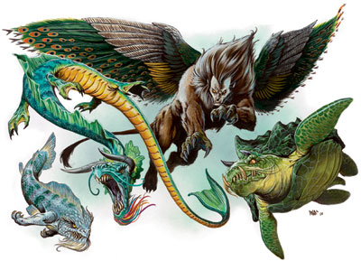
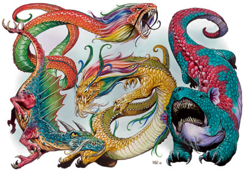

龙（Dragon,Lung）

龙是有翅膀、长得像蜥蜴的古代生物，它们的体型、身体力量及魔法能力都令人感到畏惧。最年长的龙是全世界最强的生物之一。
已知的龙有以下八种：蜣龙（river dragon）、璃龙（earth dragon）、龙王（sea dragon）、蟠龙（coiled dragon）、神龙（spirit dragon）、天龙（celestial dragon）、风龙（typhoon dragon）和鱼龙（carp dragon）。与五色龙和金属龙亲戚不同，这些龙不是以阵营来划分的。大多数龙既睿智又善良，但也有一些就像最坏的五色龙一样腐败邪恶。
所有的龙都会随着年龄增长而获得更多的能力与更强的力量。它们在孵化时的身长只有数英尺，长到太古龙时则可超过100英尺。体型的准确尺寸会因年龄及种类而有所改变。
龙的年龄层
年龄层 年龄（岁）
1 雏龙 0-5
2 幼龙 6-15
3 少年 16-25
4 青少年 26-50
5 青年 51-100
6 成年 101-200
7 壮年 201-400
8 老年 401-600
9 极老 601-800
10 古龙 801-1000
11 上古龙 1001-1200
12 太古龙 1201+
龙主要靠吃矿物质维生，从普通的石头到珍贵的宝石。也有一些吃一些活物，但是――主要是鱼或者羊。
所有的龙都属于精魂生物，大多数是天宫（Celestial bureaucracy）的官员，天宫是一个由强大精魂组成的统治机构。每种龙都有自己的任务和职责。例如，江龙守卫江湖和降雨，天龙掌管天气。
所有的龙都说龙语和精魂语。
战斗
龙使用强有力的爪子及利齿攻击对手，它们也会使用喷吐攻击或特殊的物理攻击，其类别视其类型而定。龙喜欢在空中进行战斗（除了鱼龙和龙王，它们不会飞），它们通常会先用远程攻击消耗对手的战力，然后再靠近对方。年龄较大、智力较高的龙善于估计敌人的实力，然后抢先将最具危险性的敌人解决掉（或是避开最厉害的对手，先解决其他较弱的敌人）。
龙的面宽与触及范围
体型 面宽 触及范围
超小型 2.5英尺乘2.5英尺 5英尺*
小型 5英尺乘5英尺 5英尺
中型 5英尺乘5英尺 5英尺
大型 5英尺乘10英尺 10英尺*
超大型 10英尺乘20英尺 10英尺
巨型 20英尺乘40英尺 15英尺
超巨型 40英尺乘80英尺 15英尺
*比同等体型的其他生物的一般触及范围要远。
龙的攻击
体型 1啮咬 2爪抓 2翅膀* 1尾击￥ 1碾压 1尾扫￥
超小型 1d4 1d3 ―― ―― ―― ――
小型 1d6 1d4 ―― ―― ―― ――
中型 1d8 1d6 1d4 ―― ―― ――
大型 2d6 1d8 1d6 1d8 ―― ――
超大型 2d8 2d6 1d8 2d6 2d8 ――
巨型 4d6 2d8 2d6 2d8 4d6 2d6
超巨型 4d8 4d6 2d8 4d6 4d8 2d8
*只有璃龙能使用翅膀攻击。
￥龙王不能使用尾巴攻击。
啮咬：啮咬攻击将造成资料列中注明的伤害加上龙的力量调整值。龙可以利用它的啮咬来攫取对手（细节请参阅后面有关专长的说明）。啮咬攻击可使用全部的攻击加值。
爪抓：爪抓攻击将造成资料列中注明的伤害加1/2龙的力量调整值。龙（除了龙王）可以利用它的爪抓来攫取对手（细节请参阅后面有关专长的说明）。使用爪抓时会受-5攻击加值。
翼击：璃龙可以使用翅膀挥击对手，即使在飞行时也一样。翅膀攻击将造成资料列注明的伤害加1/2龙的力量调整值。使用翅膀攻击时会受-5攻击减值。
尾击：龙每轮可用尾巴拍击一名对手。尾击造成资料列注明的伤害外加1.5倍力量调整值。使用尾击攻击时会受-5攻击加值。
碾压：飞行或跳起来的龙，体型如果在超大型或以上，就能以标准动作踩在其他对手身上，利用整个身体来碾压对方。碾压攻击只有龙在对付体型比自己小三级或更多的敌人时才有效（但它们仍可掠过或使用擒拿攻击来对付体型较大的对手）。
碾压攻击能够影响的生物数目，视龙的身体能够压到多少生物而定（请参阅上表“龙的面宽与触及范围”）。在影响范围内的生物必须通过反射检定（DC跟龙的喷吐攻击相同），否则就被压制，在下一轮必然遭到钝击伤害，除非龙将身体移开。如果龙选择继续压制它们，将其视为一般的擒抱攻击，被压制的对手每轮都会遭到碾压伤害，直到它们脱逃出去为止。
碾压攻击将造成资料列中注明的伤害加龙的1.5倍力量调整值。
尾扫：体型达到巨型的龙，能以标准动作使用它们尾巴横扫对手。尾扫的影响范围是以龙的臀部为中心，半径30英尺的半圆形。超巨型的龙，尾扫的半径则有40英尺。在其横扫范围内的生物，如果体型比龙小四级或更小，就会受到影响。尾扫攻击将造成资料列中注明的伤害加龙的1.5倍力量调整值。受影响的生物可通过反射检定（DC跟龙的喷吐攻击相同），通过则伤害减半。
擒抱：龙的碾压攻击及攫取专长（细节请参阅后面有关专长的说明）运用一般的擒抱规则，但它们并不喜欢使用擒抱攻击。
当龙被同体型或更大的生物抓住时，可用啮咬及四只脚反击对方（后脚可造成爪抓伤害）。如果龙被另一只较大的龙攫住或压制，它只能通过擒抱检定设法脱逃或用啮咬及喷吐攻击对手。如果被一个体型比自己小的对手抓住，龙可利用除尾击之外的任何物理攻击做出回应。
龙在擒抱对手时随时都可使用喷吐攻击。除此之外，它也能使用法术、类法术能力或超自然能力，但必须先通过专注检定。
喷吐攻击（超自然）：大多数龙不会喷吐攻击，取而代之的是一些类法术能力。有喷吐攻击的龙（天龙和龙王）的喷吐攻击为一个标准动作。龙每喷吐一次，必须隔1d4轮才能再次喷吐。喷吐攻击总是从龙的嘴里喷出，并朝龙所选择的方向延伸出去，其影响范围会在下表中注明。如果喷吐攻击会造成伤害，在其影响范围内的生物可进行反射检定，通过则伤害减半；其DC视龙的年龄及种类而定，它会列在个别的资料列中。
龙的喷吐攻击为锥状，长度视龙的体型而定。
龙的喷吐攻击
龙的体型 锥状*（长度）
超小型 15英尺
小型 20英尺
中型 30英尺
大型 40英尺
超大型 50英尺
巨型 60英尺
超巨型 70英尺
*此锥状的高度及宽度与其长度相同。
气势凶猛（特异）：青年或更老的龙，单靠气势就可让对手感到极度不安。这项能力在龙展开攻击、冲刺或从上方飞越时会自动产生作用。任何在“30英尺X龙的年龄层”半径范围内的生物，如果其HD比龙低，就可能受到该能力的效果所影响。
这些可能受到影响的生物，如果通过意志检定（DC=10+1/2龙的HD+龙的魅力调整值），将在一天之内都对这条龙的气势凶猛能力免疫。如果失败，HD在4或以下的生物，会慌乱达4d6轮；HD在5或以上的生物，则会颤栗达4d6轮。龙对其他龙的气势凶猛免疫。
类法术能力：龙的类法术能力视其年龄及种类而定，它可取得该年龄段及之前各个年龄段的所有能力，并以它的年龄层或术士施法者等级――取两者最高值――做为施法者等级。豁免检定DC=10+龙的魅力调整值+法术等级。除非有特别注明，否则所有类法术能力每天只可使用1次。
免疫（特异）：所有的龙都对睡眠及麻痹效果免疫。一些龙也对其他形式的攻击免疫，详情请参阅其描述文字。
法术抗力（特异）：龙随着年龄增长，对法术及类法术能力的抵抗能力也就愈强，详情请参阅其描述文字。
盲感（特异）：龙可以利用视觉以外的方法（大多数情况是利用听力及嗅觉，有时也会通过震动感应或四周环境的其他线索），辨明任何在其周遭的生物，其有效范围为30英尺X龙的年龄层。
感官异常灵敏（特异）：龙在昏暗状况下的视力是人类的四倍，在正常光线下则是两倍。它们也同时具有黑暗视觉的能力，其距离=100英尺X龙的年龄层。
侦测思想（超自然）（Detect Thought）：龙拥有与同名法术相同的能力，该能力是持续的，其距离=5英尺X龙的年龄层。
隐形（超自然）（Invisibility）：龙能够随意隐形显形。就像隐形法术一样，任何的攻击都会使它显形。
变幻外形（超自然）：龙能够以一个标准动作变成从小型到大型的任意类人生物。这种能力类似变形自己但是只能变成类人生物。当使用这种能力时，龙在易容检定上获得+10环境加值。
异界传送（类法术）（Plane Shift）：所有的龙都能随意在精魂界和主物质界间穿梭。异界传送是一个标准动作。
技能：所有的龙在开始时，每1点生命骰可有6点技能点数，加上相当于“智力调整值X生命骰数”的额外点数。这些点数可换取下列技能（一般技能级数等同于该生物的生命骰数）：聆听、侦察及搜索。剩下的技能点数通常是换取：唬骗、专注、交涉、脱逃、知识（任一）或探知（其技能级数等同于该生物的生命骰数）。龙无法获得某个职业专属的技能。
拥有施法能力的龙，只要有+1的智力加值（智力值12+），就可自动获得辨视法术技能（技能级数等同于该生物的生命骰数）。
专长：所有的龙都有一项专长，每4点HD再外加一个额外的专长。龙常见的专长有：警觉、顺劈斩（只限爪抓和尾击攻击）、精通先攻、猛力攻击、精通击破武器、专攻武器（爪抓或啮咬），与任何可取得并对术士有用的超魔专长。此外，龙也能选择怪物图鉴龙的部分里的专长：飞越攻击、盘旋、快速类法术能力、攫取和横转。
关于龙的陆上移动、龙的社会结构和龙皮请见怪物图鉴龙的部分。

鱼龙（Yu Lung[Carp Dragon]）
龙（精魂，水系）
气候/地形：温带陆地和地底
组织：单独或一群（2-5）
挑战级数：雏龙2；幼龙4；少年6
宝物：标准
阵营：通常中立
进化：雏龙7-8HD（超小型）；幼龙10-11HD（小型）；少年13-14HD（中型）
鱼龙是所有龙的婴儿形态。就像蝌蚪变成青蛙一样，鱼龙会变成龙。和蝌蚪的逐步蜕变不同，一旦少年龙变成青少年，伴随着一阵电闪雷鸣，鱼龙的转变就会突然发生。鱼龙是隐遁的害羞的，可能是所有龙中最温顺的。
鱼龙有一个嘴巴很大的爬行动物的头，前爪，还有一只大鲤鱼的身体和尾巴。鳞片是蓝灰色的并带有各种颜色的斑纹，眼睛是亮黄色的。长长的脆弱的胡须在下颚摆动。
鱼龙生活在淡水的江或湖里。它们在最黑暗的水域用泥土和石头做成自己的巢穴。虽然既整洁造得又好，这巢穴以龙的标准还是太粗糙了。这些巢穴也很空洞，因为鱼龙不收集财宝。鱼龙说通用语、水族语、龙语和精魂语。
鱼龙是腐食性的，它们吃湖底或江底的有机和无机物质。鱼龙有时和人类成为朋友，这种友谊因为它的长寿而值得注意。鱼龙甚至在变成其他龙以后还保持着友谊，只要那个人也能活那么长。
战斗
胆小的鱼龙逃避战斗。如果被激怒或者威胁，它们用牙齿和爪子还击，但是很少追击逃跑的敌人。
劣等龙之能力（Inferior Dragon Abilities）：鱼龙缺少正常龙的隐形和变化外形的能力。
水中呼吸（特异）（Water Breathing）：鱼龙能在水中呼吸。它们只能在陆地存活一小时然后就会窒息（关于窒息请参阅地下城主指南第三章）。
鱼龙的各项数值依年龄列表
年龄 体型 生命骰（生命值） 防御等级 攻击加值 强韧 反射 意志 恐惧DC SR
雏龙 超小 6d12+6（45） 20（+2体型，+3敏捷，+5天生） +8 +6 +8 +4 - -
幼龙 小型 9d12+9（67） 21（+1体型，+2敏捷，+8天生） +11 +7 +8 +5 - -
少年 中型 12d12+24（102） 22（+1敏捷，+11天生） +14 +10 +9 +7 - -
鱼龙的属性及能力依年龄列表
年龄 速度 力量 敏捷 体质 智力 感知 魅力 特殊能力
雏龙 20英尺，游泳90英尺 11 16 13 6 9 8 劣等龙之能力、水中呼吸
幼龙 20英尺，游泳90英尺 13 14 13 6 9 8
少年 20英尺，游泳90英尺 15 12 15 6 9 8
蜣龙（Chiang Lung[River Dragon]）
龙（精魂，水系）
气候/地形：温带水系
组织：青少年和青年：单独或一群（2-5）；成年、壮年、老年、极老、古老、上古和太古：单独、成双、家庭（1-2及2-5个后代）或朝廷（1加上1-8个中型自然精魂和1-6个成年或者更老的神龙，但是比蜣龙年轻）
挑战级数：青少年9；青年12；成年14；壮年17；老年19；极老20；古老22；上古23；太古25
宝物：双倍标准
阵营：通常守序中立
进化：青少年17-18HD（大型）；青年20-21HD（超大型）；成年23-24HD（超大型）；壮年26-27HD（超大型）；老年29-30HD（巨型）；极老32-33HD（巨型）；古老35-36HD（巨型）；上古38-39HD（巨型）；太古41+HD（超巨型）
在一些大陆蜣龙生活在每一条江和每一个湖里。蜣龙是雨和水之魂，艺术和学问的守护神，是最可敬和最高贵的精魂之一。它们经常以人类形态出现，还有一些次级自然精魂（也是人类形态）或者神龙陪同。
在自然形态下，蜣龙有着长长的蜿蜒的身躯和四只短腿和有蹼的脚。它的鳞片是闪耀的蓝色和绿色的，腹部是亮黄色的。它以多彩的胡子和一对又长又白的角而自豪。
蜣龙住在它们守护的水下的精魂界的魔法宫殿里。无论江或湖的大小如何，宫殿总是华丽庞大。除非是蜣龙送的，否则从宫殿里拿的物品一到水面就无用了。蜣龙有时装作有钱的贵族或者官员在豪华装饰的船上款待品德高尚的学者和艺术家。
蜣龙有时也会被人类吸引，偶尔做下风流韵事并且结婚。这种私通一般有个悲惨的结局，总是伴随着人类的死亡。这种婚姻产生的后代是江灵族。
蜣龙能吃任何的矿物和宝石，但是它们也喜欢吃鱼和羊。
战斗
蜣龙通常避免作战，但是它们会为了保护自己的疆域而进行猛烈战斗。因为它们在人类形态上花费了很长时间，它们一般装备精良，用魔法武器和大量的魔法物品作战。
飞行（超自然）（Fly）：虽然没有翅膀，蜣龙能通过大脑里的魔法蓝色珍珠飞行。如果把珍珠取出，就失去魔法不过仍然值1000gp。龙能够以一个即时动作终止或恢复飞行状态。
水中呼吸（特异）：蜣龙能不受限地在水中呼吸并且在水下随意使用各种能力。任何和蜣龙有身体接触的生物也能在水下呼吸和活动如同在水中呼吸法和自由行动术的保护之下。
降雨（超自然）（Cause Rain）：蜣龙能够喷出暴风云，在它选择的任何时间和地点降雨。雨持续2d4小时，以龙为中心半径达两英里。
操控水位（类法术）（Control Water）：蜣龙使用该类法术能力能控制最多一英里每年龄层半径的水。
海啸（超自然）（Tsunami）：在天宫的官员的命令之下，每天一次，蜣龙能制造一起引起巨大破坏的海啸。在陆地上，波浪造成类似山洪暴发的效果：被水波及的生物必须通过DC15的强韧检定。未通过检定的大型或更小的生物被冲走，每轮造成1d6点淤伤（通过DC20的游泳检定则1d3）。超大的生物被击倒，但是巨型和超巨型的生物只是被受阻。（请参阅地下城主指南里的恶劣天气）。波浪摧毁木制建筑并有25%的机会摧毁石制建筑。在海上，海啸倾覆船只并把它们撕成碎片。波浪在海岸线一英里内起作用。
其他类法术能力：随意施展――卜筮、绝望术、祝福术、操控天气、操控风向、反制邪恶、预言术、master of the rolling river*、移除诅咒；一天三次――变形自己；一天一次――高等造物术。
蜣龙的各项数值依年龄列表
年龄 体型 生命骰（生命值） 防御等级 攻击加值 强韧 反射 意志 恐惧DC SR
青少年 大型 16d12+64（168） 25（+1敏捷，-1体型，+15天生） +20 +14 +11 +15 - -
青年 超大 19d12+76（199） 26（-2体型，+18天生） +23 +15 +11 +16 24 22
成年 超大 22d12+110（253） 29（-2体型，+21天生） +27 +18 +13 +19 27 24
壮年 超大 25d12+125（287） 32（-2体型，+24天生） +31 +19 +14 +20 28 27
老年 巨型 28d12+168（350） 33（-4体型，+27天生） +34 +22 +16 +23 31 29
极老 巨型 31d12+186（387） 36（-4体型，+30天生） +39 +23 +17 +24 32 30
古老 巨型 34d12+238（459） 39（-4体型，+33天生） +43 +26 +19 +27 35 32
上古 巨型 37d12+333（573） 42（-4体型，+36天生） +48 +29 +20 +29 37 33
太古 超巨 40d12+400（660） 41（-8体型，+39天生） +48 +32 +22 +31 39 35
蜣龙的属性及能力依年龄列表
年龄 速度 力量 敏捷 体质 智力 感知 魅力 特殊能力
青少年 60英尺，飞行100英尺（不良），游泳120英尺 21 12 19 18 21 20 飞行、变形自己、水中呼吸、降雨、操控水位、卜筮、预言术、绝望术、祝福术
青年 60英尺，飞行100英尺（不良），游泳120英尺 23 10 19 18 21 20 伤害减免5/+1
成年 60英尺，飞行100英尺（不良），游泳120英尺 25 10 21 20 23 22 反制邪恶、操控风向、解除诅咒
壮年 60英尺，飞行100英尺（不良），游泳120英尺 27 10 21 20 23 22 伤害减免10/+1
老年 60英尺，飞行150英尺（笨拙），游泳120英尺 31 10 23 22 25 24 高等造物术、master of the rolling river
极老 60英尺，飞行150英尺（笨拙），游泳120英尺 35 10 23 22 25 24 伤害减免15/+2
古老 60英尺，飞行150英尺（笨拙），游泳120英尺 37 10 25 24 27 26 操控天气
上古 60英尺，飞行150英尺（笨拙），游泳120英尺 41 10 29 26 29 28 伤害减免20/+3
太古 60英尺，飞行150英尺（笨拙），游泳120英尺 43 10 31 26 29 28 海啸
璃龙（Li Lung[Earth Dragon]）
龙（地系，精魂）
气候/地形：温带陆地和地底
组织：青少年和青年：单独或一群（2-5）；成年、壮年、老年、极老、古老、上古和太古：单独、成双或家庭（1-2及2-5个后代）
挑战级数：青少年8；青年10；成年13；壮年15；老年18；极老19；古老21；上古22；太古24
宝物：双倍标准
阵营：通常中立
进化：青少年15-16HD（大型）；青年18-19HD（超大型）；成年21-22HD（超大型）；壮年24-25HD（超大型）；老年27-28HD（巨型）；极老30-31HD（巨型）；古老33-34HD（巨型）；上古36-37HD（巨型）；太古39+HD（超巨型）
璃龙是地底之魂，地震之主和邪恶的惩罚者。偶尔被命令通过展现宝矿和地下泉水的方法帮助穷困的村落，但是大多数时候它们潜藏在自己的巢穴里，离文明社会越远越好。
璃龙有着狮子的身体和尾巴和一个类人的面孔。多彩的翅膀像孔雀开屏一样（璃龙是唯一有翅膀的龙），眼睛像融化的金子一样，中间是黑色的瞳孔。当一开始从鱼龙变成璃龙时，它有着浅绿色的鳞片，但是随着它长大，鳞片变暗中间长出暗色的毛皮形成浓厚坚硬的外皮。太古龙是接近黑色的。
璃龙在深邃的洞穴里做窝，避免和其他生物接触。除非天宫派遣否则很少离开自己的巢穴。璃龙很少和其他的龙接触，只有在命令下才会合作。它们说通用语、龙语和土族语。
璃龙主要吃泥土和石头，它们也喜欢吃黄金、白银和其他珍贵金属。
战斗
璃龙喜欢避免战斗，如果巢穴被侵入就躲在阴影和石头下。如果被围在角落里或者被攻击，它的首选战术是使用地震能力把对手埋起来。如果失败的话，璃龙也是近战的可怕对手，在它长大以后能够用翅膀攻击。
地震免疫（超自然）（Earthquake Immunity）：璃龙决不会被地震伤害，无论是天然的还是魔法的。如果地震把璃龙所在的洞穴坍塌了，对它来说只是有点麻烦要挖洞出去――它不会因为掉落的石头而受伤。
地震 （超自然）（Earthquake）：每天一次，璃龙能够制造一场半径为龙的年龄层X15英尺的地震。其他方面，这个能力相当于被两倍于龙的年龄层的施法者等级的术士所释放。
咆哮（特异）（Roar）：当近战时，璃龙持续地咆哮。这种像金石相击的声音使龙60尺以内的生物无法听见任何声音，包括它们自己的。实际上，当龙持续咆哮时，被影响的生物视为耳聋。除了明显的效果，任何耳聋的生物有20%的几率施放需要言语成分的法术失败。
掘洞（特异）（Tunneling）：璃龙能够以5英尺的速度挖穿坚固的石头。
其他类法术能力：每天三次――地动术、塑石术、石墙术；每天一次――解离术、石化术。
技能：比中型大的璃龙在躲藏检定上有种族加值来抵消体型减值（青年和成年+4，壮年到古老+8，上古到更老+12）。
璃龙的各项数值依年龄列表
年龄 体型 生命骰（生命值） 防御等级 攻击加值 强韧 反射 意志 恐惧DC SR
青少年 中型 14d12+42（133） 23（+13天生） +18 +12 +9 +10 - -
青年 大型 17d12+68（178） 25（-1体型，+16天生） +22 +14 +10 +12 20 20
成年 大型 20d12+100（230）28（-1体型，+19天生） +27 +17 +12 +14 22 23
壮年 超大 23d12+115（264）30（-2体型，+22天生） +30 +18 +13 +16 24 25
老年 超大 26d12+156（325）33（-2体型，+25天生） +34 +21 +15 +18 26 28
极老 超大 29d12+174（362）36（-2体型，+28天生） +38 +22 +16 +20 28 29
古老 超大 32d12+224（432）39（-2体型，+31天生） +42 +25 +18 +22 30 31
上古 巨型 35d12+280（507）40（-4体型，+34天生） +44 +27 +19 +24 32 32
太古 巨型 38d12+304（551）43（-4体型，+37天生） +48 +29 +21 +27 35 34
璃龙的属性及能力依年龄列表
年龄 速度 力量 敏捷 体质 智力 感知 魅力 特殊能力
青少年 60英尺，飞行150英尺（不良），游泳40英尺,掘穴45英尺 19 10 17 10 13 12 地震免疫、地震、咆哮、掘洞、塑石术
青年 60英尺，飞行150英尺（不良），游泳40英尺,掘穴45英尺 23 10 19 12 15 14 伤害减免5/+1
成年 60英尺，飞行150英尺（不良），游泳40英尺,掘穴45英尺 27 10 21 12 15 14 石墙术
壮年 60英尺，飞行150英尺（不良），游泳40英尺,掘穴45英尺 29 10 21 14 17 16 伤害减免10/+1
老年 60英尺，飞行150英尺（不良），游泳40英尺,掘穴45英尺 31 10 23 14 17 16 地动术
极老 60英尺，飞行150英尺（不良），游泳40英尺,掘穴45英尺 33 10 23 16 19 18 伤害减免15/+2
古老 60英尺，飞行150英尺（不良），游泳40英尺,掘穴45英尺 35 10 25 16 19 18 石化术
上古 60英尺，飞行200英尺（笨拙），游泳40英尺,掘穴45英尺 37 10 27 18 21 20 伤害减免20/+3
太古 60英尺，飞行200英尺（笨拙），游泳40英尺,掘穴45英尺 39 10 27 20 23 22 解离术
龙王（Lung Wang[Sea Dragon]）
龙（精魂，水系）
气候/地形：温带水系
组织：青少年和青年：单独或一群（2-5）；成年、壮年、老年、极老、古老、上古和太古：单独、成双或家庭（1-2及2-5个后代）
挑战级数：青少年10；青年13；成年15；壮年18；老年20；极老21；古老23；上古24；太古26
宝物：双倍标准
阵营：通常中立
进化：青少年18-19HD（大型）；青年21-22HD（大型）；成年24-25HD（超大型）；壮年27-28HD（超大型）；老年30-31HD（超大型）；极老33-34HD（巨型）；古老36-37HD（巨型）；上古39-40HD（巨型）；太古42+HD（超巨型）
龙王是海洋的统治者，龙龟的强大亲属，它会向过往船只索要贡品。它们是海洋生物的保护者和盟友，例如鲨鱼、鲸、hai nu（洛卡鱼人）和ningyo（人鱼族）。
龙王有海龟一般的身体，它的壳上有深绿色的鳞片，上面有银色的斑点。它的身体上有更小的浅绿色的鳞片和金色的斑点。它的头像蜥蜴，有着大眼睛，金色的鳃须和小小的黑角。有一个冠状物从头顶一直延伸到颈部。它的后腿是短粗的鳍状肢，但是前部的鳍状肢无论游泳还是战斗都很强大。
龙王从不在一个地方呆很长时间，像鲨鱼一样地在深海里漫游，经常在精魂界和主物质界穿梭。它们守卫着过往船只进贡的财宝，藏在它领土的某个秘密地点。龙王说通用语、龙语和水族语。
和其他龙不同，龙王是草食性的，主要吃藻类和海草。作为补充，它们有时也吃鱼和矿物，据说还吞掉整个船只。
战斗
虽然既不能飞也不能用尾巴和翅膀攻击，龙王仍然是可怕的敌人，特别是对船只而言。它们一般先把船弄翻，阻止自己被船上的投石器砸到，同时也能更容易攻击船员。
喷吐攻击（超自然）：龙王有一种喷吐攻击，锥状的蒸汽（视为火焰伤害）。这种喷吐攻击在水上和水底都有效。
水中呼吸（特异）：龙王能随意在水上和水下呼吸。
命令鳞类（超自然）（Scaly command）：龙王能使用该能力一天三次。这好象是只对有鳞生物（爬行类和鱼类）有效的群体魅惑。施法者等级等于龙的HD。龙能够和任何被魅惑的动物沟通如同施展了动物交谈一样。
火焰免疫（特异）（Fire Immunity）：龙王对高热和火焰伤害免疫。
倾覆（特异）（Capsize）：在船只下方的青年或更老的龙王有95%的机会倾覆不超过20英尺的船。有50%的机会倾覆20到60英尺长的船，有20%的机会倾覆长于60英尺的船。极老或更老的龙王有100%的机会倾覆不超过20英尺的船，75%的机会倾覆20到60英尺长的船，50%的机会倾覆长于60英尺的船。
云雾术（类法术）（Fog Cloud）：每天一次，一条至少成年的龙能够制造半径等于50英尺X龙的年龄层的云雾。
其他类法术能力：一天三次――隐雾术、重雾术；一天一次――凋死术、暗示。
龙王的各项数值依年龄列表
年龄 体型 生命骰（生命值） 防御等级 攻击加值 强韧 反射 意志 喷吐攻击（DC）恐惧DC SR
青少年 大型 17d12+68（178） 25（-1体型，+16天生） +24 +14 +10 +12 8D10（22） - -
青年 大型 20d12+100（230） 28（-1体型，+19天生） +28 +17 +12 +15 10D10（25） 23 23
成年 超大 23d12+115（264） 30（-2体型，+22天生） +31 +18 +13 +16 12D10（26） 24 25
壮年 超大 26d12+156（325） 33（-2体型，+25天生） +35 +21 +15 +19 14D10（29） 27 28
老年 超大 29d12+203（391） 36（-2体型，+28天生） +40 +23 +16 +20 16D10（31） 28 30
极老 巨型 32d12+256（464） 37（-4体型，+31天生） +42 +26 +18 +23 18D10（34） 31 31
古老 巨型 35d12+315（542） 40（-4体型，+34天生） +46 +28 +19 +24 20D10（36） 32 33
上古 巨型 38d12+380（627） 43（-4体型，+37天生） +50 +31 +21 +27 22D10（39） 35 34
太古 超巨 41d12+451（717） 42（-8体型，+40天生） +50 +33 +22 +28 24D10（41） 36 36
龙王的属性及能力依年龄列表
年龄 速度 力量 敏捷 体质 智力 感知 魅力 特殊能力
青少年 10英尺，游泳60英尺 27 10 19 12 15 14 水中呼吸、命令鳞类、火焰免疫、隐雾术
青年 10英尺，游泳60英尺 29 10 21 14 17 16 倾覆、伤害减免5/+1
成年 10英尺，游泳60英尺 31 10 21 14 17 16 云雾术
壮年 10英尺，游泳60英尺 33 10 23 16 19 18 伤害减免10/+1
老年 10英尺，游泳60英尺 37 10 25 16 19 18 暗示
极老 10英尺，游泳60英尺 39 10 27 18 21 20 伤害减免15/+2
古老 10英尺，游泳60英尺 41 10 29 18 21 20 重雾术
上古 10英尺，游泳60英尺 43 10 31 20 23 22 伤害减免20/+3
太古 10英尺，游泳60英尺 45 10 33 20 23 22 凋死术
盘龙（Pang Lung[Coiled Dragon]）
龙（精魂，水系）
气候/地形：温带陆地和地底
组织：青少年和青年：单独或一群（2-5）；成年、壮年、老年、极老、古老、上古和太古：单独、成双或家庭（1-2及2-5个后代）
挑战级数：青少年7；青年9；成年11；壮年14；老年16；极老18；古老19；上古20；太古22
宝物：双倍标准
阵营：通常守序中立
进化：青少年14-15HD（中型）；青年17-18HD（大型）；成年20-21HD（大型）；壮年23-24HD（超大型）；老年26-27HD（超大型）；极老29-30HD（超大型）；古老32-33HD（超大型）；上古35-36HD（巨型）；太古38+HD（巨型）
盘龙是守护者之魂，被天宫安排看守墓穴或庙宇。盘龙世代地看守这个地方，因此一个家庭能够在一个巢穴呆上成千上万年。
盘龙是一种又长又细，几乎像蛇一样的龙。在青少年时代，它的鳞片是灰色的，在龙壮年时改变色彩，发展成鲜亮的颜色。各种各样的红色、绿色和橙色都是最正常的颜色，一种天生的油状分泌物能使鳞片在阳光下闪烁。五彩斑斓的鬃毛环绕在颈部，口鼻部长着黑色的胡须。
盘龙喜欢吃水果和蔬菜，经常靠奴才精心栽培的菜园里的食物为生。
战斗
盘龙喜欢在攻击之前先评估对手，经常用幻术来迷惑对手或者命令奴才先战斗。当它评估好对手的实力以后，就野蛮地攻击致死方休。
飞行（超自然）：虽然没有翅膀，盘龙能通过大脑里的魔法血红珍珠飞行。如果把珍珠取出，就失去魔法不过仍然值1000gp。龙能够以一个即时动作终止或恢复飞行状态。
水中呼吸（特异）：盘龙能够在水下呼吸自如。
命令鳞类（超自然）：盘龙能使用该能力一天三次。这就象是只对有鳞生物（爬行类和鱼类）有效的群体魅惑。施法者等级等于龙的HD。龙能够和任何被魅惑的动物沟通好象施展了动物交谈一样。
水中火（超自然）（Water Fire）：当它接触或者浸在水中时，盘龙能在自己周围环绕一种朦胧的、闪烁的、多彩的火焰灵光，能对接触它的生物造成伤害。任何用身体或者近战武器接触到龙的生物能对它造成正常的伤害，但是同时攻击者也受到表中列出的伤害（青少年和青年1d6，成年到极老2d6，古老或者更老的3d6）。所有的龙对水中火免疫。盘龙能随意解除水中火，它接触普通或魔法火焰也会被自动解除。一旦护盾被火焰解除，要2d6分钟后才能重新启动。
紧勒（特异）：盘龙总是用像蛇一样的尾巴擒抱对手而不是用尾击攻击。龙如果成功擒抱住体型至少比它小一级的生物则造成相当于尾击的伤害（见上表）。
奴才（超自然）（Minion）：更强大的精魂经常通过把不忠的丈夫和妻子的灵魂交给盘龙让他们服役的方法来惩罚他们――年数等于它们抛弃配偶的年数。一头至少成年的盘龙有25%的机会每年龄层拥有1d4个奴才。虽然他们是死人的灵魂，但能和盘龙一起在精魂界和主物质界旅行，他们既不是虚体也不是不死生物。盘龙控制他们如同支配人类一样。大约70%的奴才有NPC职业，例如平民和专家，30%有标准职业；奴才的等级和龙的年龄层相当。
类法术能力：每天三次――绝望术、祝福术、魅惑怪物、高等造物术、无声幻影、腹语术；每天一次――海市蜃楼、魅影杀手。
盘龙的各项数值依年龄列表
年龄 体型 生命骰（生命值） 防御等级 攻击加值 强韧 反射 意志 恐惧DC SR 水中火 紧勒
青少年 中型 13d12+26（110） 23（+1敏捷，+12天生） +16 +10 +9 +10 - - 1d6 �C
青年 大型 16d12+48（152） 24（-1体型，+15天生） +19 +13 +10 +13 21 19 1d6 1d8+6
成年 大型 19d12+76（199） 27（-1体型，+18天生） +24 +15 +11 +14 22 21 2d6 1d8+9
壮年 超大 22d12+110（253） 29（-2体型，+21天生） +28 +18 +13 +17 25 24 2d6 2d6+12
老年 超大 25d12+125（287） 32（-2体型，+24天生） +32 +19 +14 +18 26 26 2d6 2d6+13
极老 超大 28d12+168（350） 35（-2体型，+27天生） +36 +22 +16 +21 29 28 2d6 2d6+15
古老 超大 31d12+186（387） 38（-2体型，+30天生） +40 +23 +17 +22 30 29 3d6 2d6+16
上古 巨型 34d12+238（459） 39（-4体型，+33天生） +42 +26 +19 +25 33 30 3d6 2d8+18
太古 巨型 37d12+296（536） 42（-4体型，+36天生） +46 +28 +20 +26 34 32 3d6 2d8+19
盘龙的属性及能力依年龄列表
年龄 速度 力量 敏捷 体质 智力 感知 魅力 特殊能力
青少年 40英尺，飞行100英尺（不良），游泳60英尺 17 12 15 12 15 14 飞行、水中呼吸、魅惑怪物、命令鳞类、绝望术、祝福术、腹语术
青年 40英尺，飞行100英尺（不良），游泳60英尺 19 10 17 14 17 16 伤害减免5/+1
成年 40英尺，飞行100英尺（不良），游泳60英尺 23 10 19 14 17 16 无声幻影、奴才
壮年 40英尺，飞行100英尺（不良），游泳60英尺 27 10 21 16 19 18 伤害减免10/+1
老年 40英尺，飞行100英尺（不良），游泳60英尺 29 10 21 16 19 18 高等造物术
极老 40英尺，飞行100英尺（不良），游泳60英尺 31 10 23 18 21 20 伤害减免15/+2
古老 40英尺，飞行100英尺（不良），游泳60英尺 33 10 23 18 21 20 魅影杀手
上古 40英尺，飞行150英尺（笨拙），游泳60英尺 35 10 25 20 23 22 伤害减免20/+3
太古 40英尺，飞行150英尺（笨拙），游泳60英尺 37 10 27 20 23 22 海市蜃楼
神龙（Shen Lung[Spirit Dragon]）
龙（精魂，水系）
气候/地形：温带陆地和地底
组织：青少年和青年：单独或一群（2-5）；成年、壮年、老年、极老、古老、上古和太古：单独、成双、家庭（1-2及2-5个后代）或朝廷（1-6加上1个更老的蜣龙和1-8个中型自然精魂）
挑战级数：青少年8；青年11；成年14；壮年16；老年18；极老19；古老21；上古22；太古24
宝物：双倍标准
阵营：通常守序中立
进化：青少年16-17HD（大型）；青年19-20HD（超大型）；成年22-23HD（超大型）；壮年25-26HD（超大型）；老年28-29HD（巨型）；极老31-32HD（巨型）；古老34-35HD（巨型）；上古37-38HD（巨型）；太古40+HD（超巨型）
神龙是龙族里的侍臣，被天宫安排去协助和保护高贵的江龙。它们谦虚、忠诚并着迷于人类，总是化为人形混居在人类村庄里。人类则把神龙当成强大精魂的信使和福星，为了得到它们的庇护而建造华丽的神殿举行隆重的仪式。
神龙身形苗条，有着明亮的眼睛、带钉刺的尾巴和隆起的背部，头顶上有两只锋利的角，嘴部长出金色的胡须。在青少年时期，鳞片是暗淡的红色、蓝色、橙色或者这些颜色的混合，当它们长大时会变亮。
神龙通常和被安排陪伴的江龙住在一起。在离江龙的宫殿不远处，它们一般也有自己的适度的石头官邸。神龙说通用语、龙语和精魂语。
神龙以各种各样的漂亮的宝石为食，有时也吃鱼和啮齿动物。
战斗
神龙一般在战斗前会谈判，除非对手有明显敌意。当遇到喜欢战斗的对手时，它们也会猛烈还击。
飞行（超自然）：虽然没有翅膀，神龙能通过大脑里的魔法黄色珍珠飞行。如果把珍珠取出，就失去魔法不过仍然值1000gp。龙能够以一个即时动作终止或恢复飞行状态。
长尾（特异）（Long Tail）：神龙的尾巴特别长而且有尖刺。神龙的尾击视为比它真正的体型大一号。因此，中型神龙的尾击造成1d8点伤害。大型2d6，超大型2d8，巨型4d6。超巨型（太古）的神龙的尾击造成4d8点伤害。
水中呼吸（特异）：神龙能够在水下呼吸自如。
火焰弱点（Fire Vulnerability）：神龙如果被火焰攻击则造成双倍伤害。除非有允许伤害减半的豁免检定，那么通过则伤害减半失败否则造成两倍伤害。
命令鳞类（超自然）：神龙能使用该能力一天三次。这就象是只对有鳞生物（爬行类和鱼类）有效的群体魅惑。施法者等级等于龙的HD。龙能够和任何被魅惑的动物沟通好象施展了动物交谈一样。
虫类屏障（超自然）（Vermin Barrier）：没有任何虫类，无论普通的还是巨型的，能进入神龙半径60尺之内。该能力一直作用。
水中火（超自然）（Water Fire）：当它接触或者浸在水中时，神龙能在自己周围环绕一种朦胧的、闪烁的、多彩的火焰灵光，能对接触它的生物造成伤害。任何用身体或者近战武器接触到龙的生物能对它造成正常的伤害，但是同时攻击者也受到表中列出的伤害（青少年和青年2d6，成年到极老3d6，古老或者更老的4d6）。所有的龙对水中火免疫。神龙能随意解除水中火，它接触普通或魔法火焰也会被自动解除。一旦护盾被火焰解除，要2d6分钟后才能重新启动。
类法术能力：一天三次――寒冰锥、操控天气、冰风暴；一天一次――绝望术、祝福术、凋死术。
神龙的各项数值依年龄列表
年龄 体型 生命骰（生命值） 防御等级 攻击加值 强韧 反射 意志 恐惧DC SR 水中火
青少年 大型 15d12+45（142） 26（-1体型，+3敏捷，+14天生） +17 +12 +12 +12 - - 2d6
青年 超大 18d12+72（189） 27（-2体型，+2敏捷，+17天生） +20 +15 +13 +15 23 20 2d6
成年 超大 21d12+105（241） 30（-2体型，+2敏捷，+20天生） +25 +17 +14 +16 24 23 3d6
壮年 超大 24d12+120（276） 33（-2体型，+2敏捷，+23天生） +30 +19 +16 +19 27 25 3d6
老年 巨型 27d12+162（337） 33（-4体型，+1敏捷，+26天生） +32 +21 +16 +20 28 28 3d6
极老 巨型 30d12+180（375） 36（-4体型，+1敏捷，+29天生） +36 +23 +18 +23 31 29 3d6
古老 巨型 33d12+231（445） 39（-4体型，+1敏捷，+32天生） +40 +25 +19 +24 32 31 4d6
上古 巨型 36d12+288（522） 42（-4体型，+1敏捷，+35天生） +44 +28 +21 +27 35 32 4d6
太古 超巨 39d12+312（565） 40（-8体型，+38天生） +44 +29 +21 +28 36 34 4d6
神龙的属性及能力依年龄列表
年龄 速度 力量 敏捷 体质 智力 感知 魅力 特殊能力
青少年 60英尺，飞行100英尺（不良），游泳40英尺 17 16 17 14 17 16 飞行、水中呼吸、对电击和毒素免疫、火焰弱点、命令鳞类、虫类屏障、绝望术、祝福术
青年 60英尺，飞行100英尺（不良），游泳40英尺 19 14 19 16 19 18 伤害减免5/+1
成年 60英尺，飞行100英尺（不良），游泳40英尺 23 14 21 16 19 18 冰风暴
壮年 60英尺，飞行100英尺（不良），游泳40英尺 27 14 21 18 21 20 伤害减免10/+1
老年 60英尺，飞行150英尺（笨拙），游泳40英尺 29 12 23 18 21 20 操控天气
极老 60英尺，飞行150英尺（笨拙），游泳40英尺 31 12 23 20 23 22 伤害减免15/+2
古老 60英尺，飞行150英尺（笨拙），游泳40英尺 33 12 25 20 23 22 寒冰锥
上古 60英尺，飞行150英尺（笨拙），游泳40英尺 35 12 27 22 25 24 伤害减免20/+3
太古 60英尺，飞行150英尺（笨拙），游泳40英尺 37 10 27 22 25 24 凋死术
天龙（T’ian Lung[Celestial Dragon]）
龙（风系，精魂）
气候/地形：温带山岳
组织：青少年和青年：单独或一群（2-5）；成年、壮年、老年、极老、古老、上古和太古：单独
挑战级数：青少年10；青年13；成年15；壮年18；老年20；极老21；古老23；上古24；太古26
宝物：双倍标准
阵营：通常守序中立
进化：青少年18-19HD（大型）；青年21-22HD（超大型）；成年24-25HD（超大型）；壮年27-28HD（超大型）；老年30-31HD（巨型）；极老33-34HD（巨型）；古老36-37HD（巨型）；上古39-40HD（超巨型）；太古42+HD（超巨型）
天龙是天宫内最受宠的官员之一，是龙族的统治者。它们既尊贵又光荣，但也严酷和无情。
天龙的身体蜿蜒曲折，在它移动或作战时总是盘旋着。在青少年时期鳞片是暗金色，成年以后，就变成明亮的黄色、橙色或者绿色。五彩的鬃毛环绕着颈部，类似颜色的髯须从嘴部一直长到头顶，像茸角一样。纤细的胡须在下颚摇摆。龙还能散发出樱花的芳香。
天龙住在云堤和山顶的辉煌宫殿里。它们说通用语、龙语、风族语和精魂语。
天龙喜欢吃猫眼石和珍珠并且对给它们这种美味的人态度友好。
战斗
可能的话，天龙用喷吐攻击把敌人吓跑。如果警告无效，它们就猛烈地战斗。它们喜欢从空中作战，在对手头上盘旋并使用喷吐攻击，然后突然冲向敌人近战。
喷吐攻击（超自然）：天龙有一种喷吐攻击，是一道锥形火焰。
飞行（超自然）：虽然没有翅膀，天龙能通过大脑里的魔法黄色珍珠飞行。如果把珍珠取出，就失去魔法不过仍然值1000gp。龙能够以一个即时动作终止或恢复飞行状态。
水中呼吸（特异）：天龙能够在水下呼吸自如。
操控天气（类法术）（Control Weather）：天龙每天能使用这个类法术能力的次数等于它年龄层的两倍。
类法术能力：每天三次――火焰风暴、烟火术、暗示；每天一次――流星爆、阳炎爆。
天龙的各项数值依年龄列表
年龄 体型 生命骰（生命值） 防御等级 攻击加值 强韧 反射 意志 喷吐攻击（DC）恐惧DC SR
青少年 大型 17d12+68（178） 27（-1体型，+1敏捷，+17天生） +25 +14 +11 +15 8D10（22） - -
青年 超大 20d12+100（230） 28（-2体型，+20天生） +28 +17 +12 +17 10D10（25） 25 23
成年 超大 23d12+115（264） 31（-2体型，+23天生） +32 +18 +13 +19 12D10（26） 27 25
壮年 超大 26d12+156（325） 34（-2体型，+26天生） +36 +21 +15 +21 14D10（29） 29 28
老年 巨型 29d12+203（391） 35（-4体型，+29天生） +39 +23 +16 +23 16D10（31） 31 30
极老 巨型 32d12+256（464） 38（-4体型，+32天生） +43 +26 +18 +26 18D10（34） 34 31
古老 巨型 35d12+315（542） 41（-4体型，+35天生） +47 +28 +19 +28 20D10（36） 36 33
上古 超巨 38d12+380（627） 40（-8体型，+38天生） +47 +31 +21 +31 22D10（39） 39 34
太古 超巨 41d12+451（717） 43（-8体型，+41天生） +51 +33 +22 +33 24D10（41） 41 36
天龙的属性及能力依年龄列表
年龄 速度 力量 敏捷 体质 智力 感知 魅力 特殊能力
青少年 40英尺，飞行250英尺（不良），游泳30英尺 29 12 19 18 21 20 飞行、水中呼吸、操控天气、烟火术
青年 40英尺，飞行250英尺（不良），游泳30英尺 31 10 21 18 21 20 伤害减免5/+1
成年 40英尺，飞行250英尺（不良），游泳30英尺 33 10 21 20 23 22 暗示
壮年 40英尺，飞行250英尺（不良），游泳30英尺 35 10 23 20 23 22 伤害减免10/+1
老年 40英尺，飞行300英尺（笨拙），游泳30英尺 39 10 25 22 25 24 火焰风暴
极老 40英尺，飞行300英尺（笨拙），游泳30英尺 41 10 27 24 27 26 伤害减免15/+2
古老 40英尺，飞行300英尺（笨拙），游泳30英尺 43 10 29 26 29 28 阳炎爆
上古 40英尺，飞行300英尺（笨拙），游泳30英尺 45 10 31 28 31 30 伤害减免20/+3
太古 40英尺，飞行300英尺（笨拙），游泳30英尺 47 10 33 30 33 32 流星爆
风龙（Tun Mi Lung[Typhoon Dragon]）
龙（精魂，水系）
气候/地形：温带水系
组织：青少年和青年：单独或一群（2-5）；成年、壮年、老年、极老、古老、上古和太古：单独
挑战级数：青少年9；青年12；成年14；壮年17；老年19；极老20；古老22；上古23；太古25
宝物：双倍标准
阵营：通常中立邪恶
进化：青少年17-18HD（大型）；青年20-21HD（超大型）；成年23-24HD（超大型）；壮年26-27HD（超大型）；老年29-30HD（巨型）；极老32-33HD（巨型）；古老35-36HD（巨型）；上古38-39HD（巨型）；太古41+HD（超巨型）
邪恶并野蛮，风龙掌管飓风和台风――而且它们很喜欢这个任务。虽然一般来说只有在天宫命令下才能这样做，但是它们总是无视命令，出于纯粹的憎恨而投入疯狂的破坏之中。在这种情况下，只有天龙才能控制它们。
风龙有着蜿蜒的身体，覆盖着多彩的厚重鳞片，蓝绿、暗红和紫色都很普遍。它们有着黑色，又小又圆的眼睛，纤细的胡子在颚下摇摆，巨大的下颚有着剃刀般锋利的利齿。
风龙在海底有奢华的宫殿，远离和平文明的海洋生物的领土。它们很少呆在巢穴内，喜欢在海岸线和天空徘徊，寻找发泄的途径。风龙说通用语、龙语和水族语。
在吃东西方面，风龙是最不挑剔的龙，同样喜欢鱼、漂亮宝石和倾覆的船只。
战斗
风龙不像其他的龙一样讨厌作战，它放出神风和闪电束。但它们更喜欢用爪抓和啮咬把敌人肢解。
飞行（超自然）：虽然没有翅膀，风龙能通过大脑里的魔法黑色珍珠飞行。如果把珍珠取出，就失去魔法不过仍然值1000gp。龙能够以一个即时动作终止或恢复飞行状态。
水中呼吸（特异）：风龙能够在水下呼吸自如。
风系和水系免疫（特异）（Air and Water Immunity）：风龙对所有基于风和水的攻击免疫。
神风（类法术）（Divine Wind）：每周一次，风龙能够召唤强度相当于飓风（请参阅地下城主指南表3-17：风力效果）的神风。风以每年龄层五英里为半径，以风龙为中心。持续6d4小时。
其他类法术能力：一天三次――黑暗术、闪电束；一天一次――连锁闪电、律令震慑、防生物力场。
风龙的各项数值依年龄列表
年龄 体型 生命骰（生命值） 防御等级 攻击加值 强韧 反射 意志 恐惧DC SR
青少年 大型 16d12+64（168） 26（+1敏捷，-1体型，+16天生） +22 +14 +11 +13 - -
青年 超大 19d12+95（218） 27（-2体型，+19天生） +25 +16 +11 +14 22 22
成年 超大 22d12+110（253） 30（-2体型，+22天生） +29 +18 +13 +17 25 24
壮年 超大 25d12+150（312） 33（-2体型，+25天生） +33 +20 +14 +19 27 27
老年 巨型 28d12+196（378） 34（-4体型，+28天生） +35 +23 +16 +22 30 29
极老 巨型 31d12+248（449） 37（-4体型，+31天生） +39 +25 +17 +24 32 30
古老 巨型 34d12+306（572） 40（-4体型，+34天生） +43 +28 +19 +27 35 32
上古 巨型 37d12+370（610） 43（-4体型，+37天生） +47 +30 +20 +28 36 33
太古 超巨 40d12+400（660） 42（-8体型，+40天生） +48 +32 +22 +31 39 35
风龙的属性及能力依年龄列表
年龄 速度 力量 敏捷 体质 智力 感知 魅力 特殊能力
青少年 60英尺，飞行250英尺（不良），游泳60英尺 25 12 19 14 17 16 飞行、水中呼吸、风系和水系免疫、神风、黑暗术
青年 60英尺，飞行250英尺（不良），游泳60英尺 27 10 21 14 17 16 伤害减免5/+1
成年 60英尺，飞行250英尺（不良），游泳60英尺 29 10 21 16 19 18 闪电束
壮年 60英尺，飞行250英尺（不良），游泳60英尺 31 10 23 18 21 20 伤害减免10/+1
老年 60英尺，飞行300英尺（笨拙），游泳60英尺 33 10 25 20 23 22 防生物力场
极老 60英尺，飞行300英尺（笨拙），游泳60英尺 35 10 27 22 25 24 伤害减免15/+2
古老 60英尺，飞行300英尺（笨拙），游泳60英尺 37 10 29 24 27 26 连锁闪电
上古 60英尺，飞行300英尺（笨拙），游泳60英尺 39 10 31 24 27 26 伤害减免20/+3
太古 60英尺，飞行300英尺（笨拙），游泳60英尺 43 10 31 26 29 28 律令震慑
|